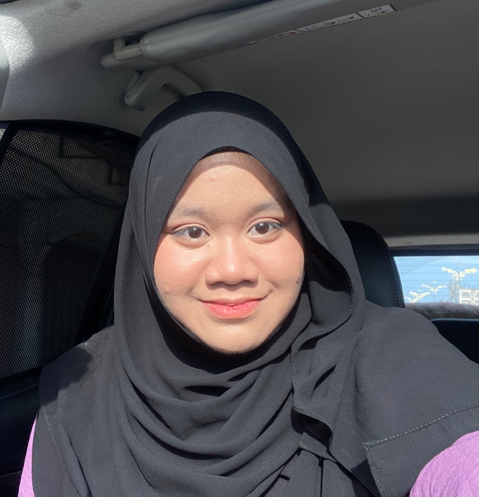

Belajar Fiqh,
Dengan Mudah & Interaktif.
FiqhSphere ialah portal pembelajaran digital yang dibina khas untuk pelajar sekolah menengah memahami asas-asas Fiqh — bermula dengan ibadah Solat — secara visual, interaktif, dan mendalam.
Solat itu adalah satu kewajipan yang ditentukan waktunya.
"Sesungguhnya solat itu adalah satu ketetapan yang diwajibkan ke atas orang-orang yang beriman, yang tertentu waktunya."
Apakah itu Fiqh?
Fiqh ialah ilmu yang membahaskan hukum-hukum syariah Islam yang berkaitan dengan amalan harian seorang Muslim — dari ibadah, muamalat, hingga akhlak. Ia membimbing kita memahami bagaimana melaksanakan perintah Allah dengan betul dan sempurna.
Dalam mata pelajaran Pendidikan Islam, Fiqh menjadi tunjang penting kerana ia menjadikan iman tidak hanya tinggal di hati, tetapi diterjemahkan menerusi perbuatan yang berlandaskan ilmu.
FiqhSphere menyusun semula kandungan ini dalam bentuk yang lebih visual, interaktif dan mudah diikuti — supaya pelajar menemui keseronokan dalam menuntut ilmu agama.
Empat tunjang ibadah dalam Fiqh.
Tekan mana-mana kategori untuk meneroka kandungannya. Modul Solat sudah lengkap dengan video, slaid nota, rukun, syarat, hikmah dan kuiz.
Solat
Solat adalah ibadah utama yang menghubungkan hamba dengan Penciptanya. Pelajari setiap aspeknya secara berperingkat dan mendalam.
Solat: Mercu Kejayaan
Solat bukan sekadar ritual. Ia adalah saat di mana seorang hamba berdiri di puncak kerohaniannya — menemui ketenangan, kekuatan dan kejernihan minda yang tidak dapat dibeli dengan apa-apa pun.
Mengapa "Mercu"?
Solat menjadi penanda paras kerohanian. Pelajar yang menjaga solatnya akan menjaga adab, masanya, dan akhlaknya. Inilah yang dimaksudkan dengan kejayaan dunia dan akhirat.
Dirikan solat — bina kejayaan.
Objektif Pembelajaran
Setelah mempelajari modul ini, pelajar dapat mencapai hasil berikut
Peristiwa Pensyariatan Solat
Berbeza dengan kebanyakan ibadah, perintah solat 5 waktu diturunkan secara terus dari Allah kepada Nabi Muhammad SAW pada peristiwa Israk dan Mikraj.
Video Pengajaran
Tujuh video pilihan merangkumi semua aspek solat — dari pengertian, syarat, rukun hingga tata cara yang sempurna.


![CARA SOLAT SEMPURNA [BESERTA TERJEMAHAN BACAAN]](https://img.youtube.com/vi/y-WaWAyihZY/hqdefault.jpg)


Rukun solat ialah perkara yang wajib dilakukan dan menjadi tunjang sahnya solat. Tekan setiap rukun untuk bacaan dan penjelasan lanjut.
Berniat di dalam hati pada permulaan solat untuk mengerjakan solat tertentu.
Bagi yang mampu, berdiri tegak menghadap kiblat ketika solat fardhu. Orang yang tidak mampu berdiri boleh solat dengan duduk, berbaring atau dengan isyarat.
Mengangkat kedua tangan sambil melafazkan takbir sebagai pembuka solat. Solat bermula dan tidak sah tanpa takbiratul ihram.
Membaca surah Al-Fatihah pada setiap rakaat dengan tertib dan jelas.
Membongkok hingga punggung lurus selari dengan lantai, kedua tangan memegang lutut, dan berhenti seketika dengan tuma'minah.
Bangkit dari rukuk, berdiri tegak dan berhenti seketika dengan tuma'minah sebelum turun sujud.
Meletakkan tujuh anggota sujud ke lantai: dahi dan hidung, kedua tapak tangan, kedua lutut, dan jari-jari kedua kaki.
Duduk seketika dengan tuma'minah antara sujud pertama dan kedua dalam setiap rakaat.
Duduk pada rakaat terakhir solat untuk membaca tasyahhud. Cara duduk adalah tawarruk — kaki kiri dihampar ke kanan dan punggung duduk di lantai, berbeza daripada duduk tahiyat awal (iftirasy).
Membaca lafaz tasyahhud yang mengandungi syahadah dan salam ke atas Nabi SAW pada duduk tahiyat akhir.
Membaca selawat Ibrahimiyyah selepas tasyahhud akhir sebelum memberi salam.
Memberi salam sebagai penutup solat dengan memalingkan muka ke kanan, kemudian sunat ke kiri.
Melakukan setiap rukun mengikut urutan yang betul tanpa mendahulukan yang kemudian. Solat terbatal jika rukun dilakukan secara terbalik dengan sengaja.
Dengar bacaan bagi setiap rukun dan sunat solat mengikut turutan sebenar dari niat hingga tertib. Tekan setiap tajuk untuk buka audio.
Syarat Sah Solat
Syarat Wajib Solat
Perkara yang Membatalkan Solat
Sekiranya berlaku, solat hendaklah diulangi semula
Hikmah Solat
Akibat Meninggalkan Solat
Peringatan Waktu Solat
Lima waktu solat fardhu yang diwajibkan setiap hari. Waktu semasa akan ditandakan secara automatik berdasarkan jam tempatan anda.
Info Tambahan
Maklumat tambahan berkaitan solat yang perlu diketahui oleh setiap pelajar sebagai pelengkap kepada modul utama.
Solat Jamak
Menghimpunkan dua solat fardhu dalam satu waktu. Diharuskan ketika musafir (perjalanan jauh), hujan lebat, atau sakit. Terdapat dua jenis: Jamak Taqdim (solat Asar dikerjakan pada waktu Zohor) dan Jamak Takhir (solat Zohor dikerjakan pada waktu Asar).
Solat Qasar
Memendekkan solat fardhu empat rakaat kepada dua rakaat. Diharuskan bagi musafir yang melebihi jarak 2 marhalah (±89 km) dan berniat untuk bermusafir. Boleh digabungkan dengan jamak (jamak qasar).
Solat Berjemaah
Solat yang dilakukan secara bersama-sama dengan sekurang-kurangnya dua orang — seorang imam dan seorang makmum. Ganjaran solat berjemaah adalah 27 darjat lebih berbanding solat bersendirian. Hukumnya sunat muakkad.
Solat Sunat Rawatib
Solat sunat yang mengiringi solat fardhu. Terbahagi kepada sunat muakkad (sangat dituntut) dan sunat ghairu muakkad. Contoh: 2 rakaat sebelum Subuh, 4 rakaat sebelum Zohor, dan 2 rakaat selepas Maghrib.
Qada' Solat
Menggantikan solat yang tertinggal tanpa uzur syarie adalah wajib. Solat yang ditinggalkan kerana uzur (tidur atau terlupa) hendaklah diqada' apabila sedar atau teringat. Qada' dilakukan mengikut bilangan rakaat asal tanpa jamak atau qasar.
Solat Khusyuk
Solat yang khusyuk bermaksud hadir hati dan fikiran sepenuhnya kepada Allah. Ini dicapai melalui: memahami makna bacaan, mengelak gangguan, berwudhu dengan sempurna, dan menghayati setiap gerakan. Solat khusyuk adalah roh kepada solat itu sendiri.
Pilih topik dan mulakan kuiz.
Pilih topik di bawah untuk menguji ilmu anda. Buat masa ini, topik Solat telah siap sepenuhnya dengan 30 soalan interaktif dan maklum balas serta-merta.
30 Soalan,
Tak Sampai 10 Minit.
Setiap soalan disertakan maklum balas serta-merta supaya anda belajar dari setiap kesilapan. Skor akhir akan ditampilkan dengan motivasi peribadi.
Pasukan kecil di sebalik FiqhSphere.
FiqhSphere adalah projek tugasan kursus teknologi pendidikan oleh sekumpulan pelajar Universiti Sains Islam Malaysia (USIM). Kami percaya pendidikan agama yang baik bermula dengan bahan ajar yang menarik.
Universiti Sains Islam Malaysia
Sebuah universiti awam yang menggabungkan pendekatan sains moden dengan ilmu-ilmu Islam tradisional. Kami berusaha menterjemah falsafah ini melalui karya digital pendidikan.
Misi kami
Membina sumber pembelajaran Fiqh yang moden, ringkas dan menyenangkan untuk pelajar sekolah menengah di Malaysia.
Kami percaya bahawa apabila ibadah difahami dengan baik, ia akan dilakukan dengan cinta — bukan sekadar rutin.
Lima pelajar, satu visi.
Setiap ahli memegang peranan tersendiri dalam pembinaan FiqhSphere — dari penyelidikan kandungan hinggalah pembangunan antara muka.
